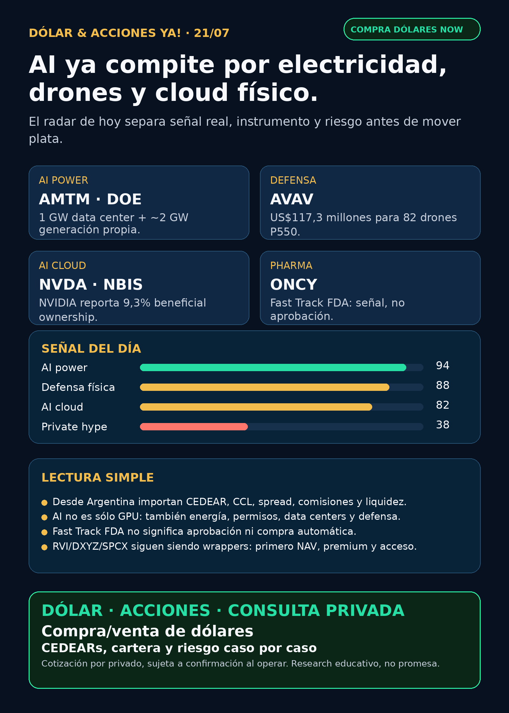

AI ya compite por electricidad, drones y cloud físico.
DOE/Amentum pone AI power en modo infraestructura soberana; AVAV deja defensa física verificable; NVIDIA/Nebius y ONCY muestran radar con riesgo.
Texto WhatsApp
Placa del día

Dólar & Acciones YA — 21/07
Fecha de edición: 2026-07-21. Research educativo para Argentina. No es recomendación personalizada de compra ni de venta.
Lectura simple del día
La señal fuerte de hoy no es “otro chip más”. Es que la inteligencia artificial empieza a pedir infraestructura soberana: tierra, permisos, generación eléctrica propia, seguridad nacional, drones físicos y operadores de cloud que se vuelven parte del mapa estratégico.
En criollo: para que AI escale hacen falta GPUs, sí, pero también electricidad, data centers, microgrids, defensa, foundries, financing y brokers que permitan entrar sin pagar cualquier spread. Desde Argentina se suma una capa más: CEDEAR o acción directa, CCL implícito, MEP, liquidez local, comisiones, fiscalidad y tamaño dentro de cartera.
Contexto dólar público usado sólo como referencia educativa: BlueLytics marcó oficial vendedor ARS 1.502 y blue vendedor ARS 1.538 con update 2026-07-20 19:45 -03. CriptoYa marcó oficial ask ARS 1.500, blue ask ARS 1.535, USDT ask ARS 1.577,883, MEP AL30 ARS 1.518,69 y CCL AL30 ARS 1.559,71. Los MEP/CCL tenían timestamp de cierre 2026-07-20 16:59. Para operar de verdad, se confirma en broker vivo.
Ordenado por valor educativo y fuerza de señal de radar, no por recomendación de compra.
Tesis central
AI está pasando de narrativa de software a infraestructura crítica. Amentum muestra un data center AI unido a generación propia bajo DOE/NNSA. AeroVironment muestra defensa física con drones reales para el U.S. Army. NVIDIA aparece con exposición estratégica a Nebius, un operador AI cloud. Y pharma recuerda que un Fast Track puede ser señal de radar, pero no aprobación ni revenue.
Señales educativas del día
1) AI power / gobierno / infraestructura crítica — Amentum (`AMTM`)
- Qué pasó: Amentum anunció que fue seleccionado por DOE/NNSA para negociar un phased lease en Savannah River Site, South Carolina.
- Dato clave: proyecto de data center AI de 1 GW soportado por aproximadamente 2 GW de generación on-site. El esquema inicial sería gas natural con puente a nuclear avanzada.
- Fuente primaria: https://www.amentum.com/news/amentum-selected-for-the-department-of-energy-ai-data-center-and-energy-generation-project/
- Fuente secundaria verificada: https://www.microgridknowledge.com/data-center-microgrids/article/55391972/amentum-to-develop-co-located-ai-data-center-and-power-infrastructure-at-savannah-river-national-laboratory
- Lectura en criollo: AI no escala sin electricidad confiable. El peaje nuevo no es sólo comprar GPUs: también es energía, ingeniería, permisos, seguridad nacional y land.
- Accionable local Argentina: acceso/CEDEAR no verificado; tratar como radar educativo.
- Accionable internacional/global: posible vía `AMTM` si hay broker USA, pero requiere análisis de valuación, contratos, márgenes y riesgo político.
- Estado: señal fortalecida / vigilar.
2) Defensa / drones / physical AI — AeroVironment (`AVAV`)
- Qué pasó: AeroVironment anunció contrato U.S. Army de US$117,3 millones.
- Dato clave: 82 P550 uncrewed aircraft systems para Battalion Reconnaissance / Long Range Reconnaissance. P550 es Group 2 eVTOL, hasta 5 horas de endurance all-battery, payload multi-sensor de hasta 15 lb y reconfiguración en campo en menos de 5 minutos.
- Fuente primaria: https://www.avinc.com/2026/07/20/av-awarded-117-3-million-u-s-army-production-contract-for-p550/
- Lectura en criollo: defensa ya no es sólo primes viejos. Hay drones, ISR, precision strike, electronic warfare y comunicaciones tácticas. Eso puede ser moat industrial, pero también alto beta.
- Accionable local Argentina: CEDEAR/acceso local no verificado.
- Accionable internacional/global: `AVAV` vía mercado USA; revisar precio, integración BlueHalo, backlog, márgenes y concentración de contratos.
- Estado: señal fortalecida / vigilar valuación y ejecución.
3) AI cloud ecosystem — NVIDIA (`NVDA`) + Nebius (`NBIS`)
- Qué pasó: un Schedule 13G presentado el 2026-07-20 muestra beneficial ownership de NVIDIA en Nebius.
- Dato clave: NVIDIA reporta 22.256.412 acciones Clase A de Nebius, equivalentes a 9,3%. Incluye 1.190.476 acciones ya reportadas y 21.065.936 acciones subyacentes a un pre-funded warrant adquirido el 2026-03-11, con restricciones de ejercicio/venta antes del 2026-09-11.
- Fuente primaria SEC: https://www.sec.gov/Archives/edgar/data/1045810/000104581026000062/primary_doc.xml
- Lectura en criollo: NVIDIA no sólo vende palas en la fiebre del oro AI. También puede tomar exposición a operadores de infraestructura cloud. Eso abre un mapa de proxies, pero no significa revenue inmediato ni que Nebius sea “compra automática”.
- Accionable local Argentina: `NVDA` suele tener vías globales/CEDEAR a verificar; `NBIS` local no verificado.
- Accionable internacional/global: `NVDA` y `NBIS` requieren análisis separado de valuación, capex, liquidez y lockups.
- Estado: señal fortalecida / vigilar.
4) Pharma / biotech regulatory — Oncolytics (`ONCY`)
- Qué pasó: Oncolytics informó FDA Fast Track para pelareorep + checkpoint inhibitor en anal cancer 2L+.
- Dato clave: la compañía dice que no hay terapias FDA-approved para pacientes que progresan tras primera línea standard of care. Fast Track permite más interacción con FDA, potencial rolling review y elegibilidad a Priority Review si aplica. Datos GOBLET citados por la empresa: ORR aproximado 30%, median duration of response aproximado 15,5 meses y 12-month OS 82% vs histórico 45,7%.
- Fuente primaria SEC: https://www.sec.gov/Archives/edgar/data/1129928/000112992826000045/oncolyticsscacfasttrack.htm
- Fuente secundaria issuer-distributed: https://www.globenewswire.com/news-release/2026/07/20/3329774/0/en/oncolytics-biotech-receives-fast-track-designation-for-pelareorep-in-second-line-and-later-anal-cancer.html
- Lectura en criollo: Fast Track no es aprobación. Es un semáforo regulatorio que puede acelerar conversaciones, no garantiza ventas ni éxito clínico.
- Accionable local Argentina: micro biotech USA; acceso local no verificado, liquidez/riesgo altos.
- Estado: vigilar / alto riesgo.
5) Nuclear microreactors / data-center power LatAm — Terra Innovatum (`NKLR`)
- Qué pasó: POWER Magazine reportó selección de la plataforma SOLO por Waiken ILW para infraestructura de data centers en LatAm/Brasil.
- Dato clave: letter of intent por hasta 8 MWe behind-the-meter para soportar DIRECTV Latin America y SKY Brasil/Jaguariúna.
- Fuente secundaria verificada: https://www.powermag.com/terra-innovatum-waiken-ilw-will-deploy-microreactors-for-data-center-infrastructure/
- Identidad pública SEC: `NKLR` / Terra Innovatum Global N.V. CIK 0002067627.
- Lectura en criollo: confirma la dirección del mundo — energía on-site para infraestructura crítica — pero un LOI chico no equivale a revenue, permisos nucleares ni ejecución asegurada.
- Accionable Argentina/global: no asumir acceso fácil; requiere liquidez, filings, economics, permisos y riesgo regulatorio.
- Estado: vigilar / especulativo.
6) Aerospace industrial — GE Aerospace (`GE`)
- Qué pasó: GE Aerospace firmó acuerdo con SPDB Financial Leasing por 10 motores spare CF34-10A para soportar COMAC C909.
- Dato clave: GE declara más de 11.000 motores CF34 vendidos, 178 operadores, 76 países y una installed base aproximada de 50.000 motores comerciales + 30.000 militares.
- Fuente primaria: https://www.geaerospace.com/news/press-releases/ge-aerospace-and-spdb-financial-leasing-signs-agreement-cf34-10a-spare-engines
- Lectura en criollo: GE no es sólo “defensa vieja”. El moat está en installed base, repuestos, mantenimiento, motores militares/comerciales y aftermarket.
- Accionable local Argentina: CEDEAR/acceso local a verificar.
- Estado: fortalece tesis estructural / señal comercial menor.
Watchlist base — seguimiento rápido
- RKLB: revisado. Sin fuente primaria nueva fuerte superior a los eventos previos de Iridium/Space Force/NASA.
- NVDA: señal nueva por Nebius 13G; fortalece ecosystem/AI cloud. No es revenue inmediato.
- PLTR: ruido de valuación/earnings preview; sin contrato o filing material nuevo.
- TSM: tesis estructural vigente por AI/foundry; sin primaria nueva superior al Q2/6-K ya indexado.
- MU: HBM/memory sigue estructural; sin filing nuevo material.
- GOOGL/GOOG: reportes secundarios sobre chip AI eficiente quedaron sin fuente primaria usable; auditoría, no headline fuerte.
- AAPL / AVGO: acuerdo custom ASIC previo sigue vigente; sin nuevo filing material.
- HOOD: sin señal operativa nueva; aparece asociado a RVI por sponsor sales, que es riesgo de wrapper.
- TSLA: robotaxi/NHTSA sigue audit-only sin fuente primaria usable.
- ASML: sin novedad superior al Q2/outlook/High-NA ya indexado; mantener “ASML sí / all-in no”.
- Gold / GLD / GOLD / B: instrumento ambiguo; no reportar precio ni tesis hasta confirmar si es ETF oro, minera, Berkshire B u otro.
- RVI: nueva Form 4 muestra ventas del sponsor Robinhood; riesgo de instrumento.
- SNDK / CBRS: Cerebras sigue radar alto por OpenAI/AWS/customer concentration, pero sin SEC nuevo material.
Energía y AI power
- AI power soberana: `AMTM` es la señal fresca más fuerte. Data center AI + generación propia bajo DOE/NNSA.
- Nuclear/modular: `NKLR` entra como radar especulativo; LOI de 8 MWe no equivale a revenue ni permisos.
- Transformadores / power hardware: Hitachi Energy, Siemens Energy (`ENR.DE`), GE Vernova (`GEV`), HD Hyundai Electric, Hyosung/HICO, Virginia Transformer y Delta Star revisados. No apareció primaria fresca fuerte; el lane sigue activo porque AI necesita transformadores, switchgear, breakers, subestaciones, power semis y lead times.
- Energéticas argentinas: `PAM/PAMP`, `VIST`, `YPF`, `TGS`, `CEPU` revisadas. Sin señal primaria nueva superior a Pampa Fértil Pampa y Vista Q2 ya indexadas; mantener radar educativo local.
Pharma / salud
- ONCY: Fast Track regulatorio fresco; no aprobación.
- LLY: titulares sobre obesity pill/post-marketing studies quedaron sin documento FDA/company primario en esta corrida. No elevar.
- AZN: señales previas mixtas siguen vigentes: Zegfrovy fortalece oncology; Wainua ATTR-CM falló endpoint primario.
- NVO: Wegovy oral Europa y buyback previos siguen vigentes; sin catalyst nuevo primario.
- MRK / CELC: LIPFENDRA y REVTORPYK ya indexados como señales previas; sin actualización superior.
Radar amplio fuera de watchlist
- Defensa / guerra física: `AVAV` es headline real por contrato U.S. Army P550. `GE` deja señal industrial de installed base/services. `RTX`, `LMT`, `NOC`, `GD`, `HWM`, `KTOS`, `BA`, `ITA/XAR` revisados sin primaria fresca comparable.
- AI infra/cloud: `NVDA` + `NBIS` 13G es relevante. `GOOGL` y `TSM` tuvieron señales secundarias sin primaria nueva usable.
- Autonomous mobility / physical AI: `TSLA` robotaxi queda audit-only por falta de NHTSA/fuente primaria; Waymo/Alphabet, Uber, Zoox/Amazon y Joby revisados sin señal verificable superior.
- Space / orbital AI: `SPCX`/SpaceX y `RKLB` sin filing nuevo útil esta noche; wrappers privados sólo educación hasta NAV/premium/acceso.
- Crypto gobernado / rails: sin señal nueva superior a Robinhood Chain/Stock Tokens/Agentic Accounts ya indexados. No hay token trade.
- Commodities/oro: bloqueado hasta resolver instrumento exacto.
Private markets / instrumentos empaquetados
- RVI / Robinhood Ventures Fund I: wrapper listado, no operating company. Nueva Form 4: Robinhood Markets vendió 33.289 shares el 16–17/7 por aprox. US$867,2k, VWAP aprox. US$26,05, quedando 13.232.252 shares. Fuente SEC: https://www.sec.gov/Archives/edgar/data/2085091/000178387926000097/wk-form4_1784580144.xml
- DXYZ / Destiny Tech100: narrativa de SpaceX/OpenAI/Databricks sigue como educación; sin NAV/holdings/premium fresco verificable.
- SPCX / SpaceX: sin SEC filing nuevo útil. No convertir en “barato” ni en recomendación sin precio, float, lockup, liquidez y acceso Argentina/USA.
- ARKVX / AGIX / XOVR / VCX / FAPMI / Forge: sin evidencia fresca suficiente. Requieren fact sheet, holdings, NAV/premium, liquidez y acceso.
- NBIS / Nebius: público y con señal NVIDIA, pero requiere análisis separado de valuación, capex, clientes, lockups y acceso local/global.
Capa Argentina — cómo leer esto desde acá
- CEDEAR: no es igual a comprar la acción original. Tiene ratio, liquidez local, spread, comisiones y CCL implícito.
- MEP/CCL: el tipo de cambio puede mover tu resultado aunque la acción de afuera no cambie.
- Buena empresa ≠ buena inversión al precio actual: AMTM, AVAV, NVDA, NBIS, ONCY o GE pueden tener señales reales y aun así requerir precio de entrada, horizonte, riesgo y tamaño.
- Proxy imperfecto: comprar una energética argentina, una utility/global, una biotech o un wrapper privado no tiene el mismo riesgo ni la misma liquidez.
- Cuenta USA/global: da acceso más directo, pero suma fiscalidad/compliance y riesgo de mercado.
Red flags / hype para ignorar hoy
- “AI power = comprar cualquier eléctrica”: no. Hay que distinguir generación, red, data-center deals, contratos, permisos, deuda y regulación.
- “Contrato de drones = compra segura”: no. AVAV tiene señal real, pero también valuación, integración BlueHalo, márgenes y riesgo de contratos.
- “NVDA compró Nebius = Nebius automática”: no. Es positioning estratégico; falta analizar valuación, capex, lockups y clientes.
- “Fast Track FDA = aprobado”: no. Es proceso regulatorio, no revenue.
- “RVI/DXYZ/SPCX son acceso mágico a privadas”: no sin NAV, holdings, premium, volumen, restricciones y acceso.
- “Robotaxi/FSD resuelto”: no sin fuente regulatoria primaria.
- “Gold/GLD/GOLD/B”: bloqueado hasta confirmar instrumento exacto.
Qué mirar después
1. AMTM/DOE: términos definitivos del lease, economics, margen, capex, permisos, timeline y contraparte energética.
2. AVAV: backlog, margen, integración BlueHalo, próximos contratos DoD y valuación.
3. NVDA/NBIS: ejercicio de warrants, lockup de septiembre, contratos Nebius, capex y concentración de clientes.
4. ONCY: próximos datos clínicos, cash runway, BLA path y confirmación FDA adicional.
5. Power hardware: Hitachi, Siemens Energy, GE Vernova, HD Hyundai Electric y Hyosung por órdenes concretas de data centers/subestaciones.
6. Argentina: CEDEAR/acceso local, spread, liquidez, MEP/CCL y tamaño de posición antes de cualquier análisis operativo.
Recibo de cobertura
Watchlist base revisada; energéticas argentinas revisadas; transformadores/power hardware revisado; pharma/GLP-1/oncology revisado; defensa/aeroespacial revisado; space/private wrappers revisado; autonomía/physical AI revisado; crypto gobernado revisado. Entrega text-only vigente: no se generó contenido de voz.
Servicio privado
Dólar · Acciones · Consulta privada. Si querés comprar o vender dólares, entender CEDEARs, armar una cartera o revisar riesgo, se ve por privado caso por caso. Cotización de dólares sujeta a confirmación al momento de operar.
Disclaimer
Esto es research educativo para decisión humana. No es asesoramiento financiero personalizado ni recomendación de compra/venta.